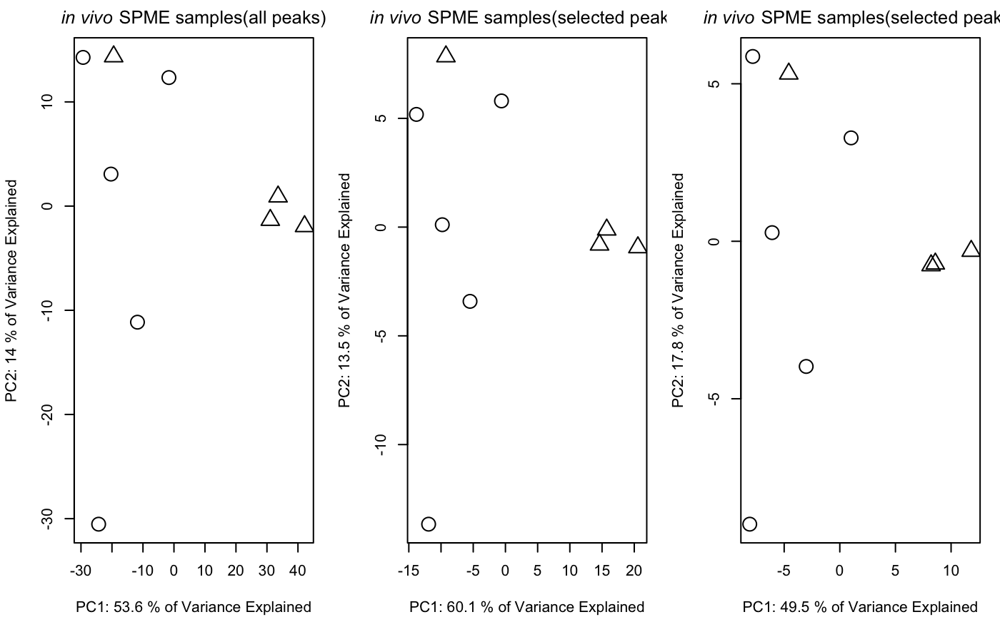

Paired Mass Distance(PMD) analysis for GC/LC-MS based non-targeted analysis
Miao Yu
2019-05-24
globalstd.RmdIntroduction of Paired Mass Distance analysis
pmd package use Paired Mass Distance (PMD) relationship to analysis the GC/LC-MS based non-targeted data. PMD means the distance between two masses or mass to charge ratios. In mass spectrometry, PMD would keep the same between two masses or two mass to charge ratios(m/z). There are twe kinds of PMD involved in this package: PMD within same retention time group and PMD from different retention time groups.
PMD within same retention time group
In GC/LC-MS based non-targeted analysis, peaks could be seperated by chromatograph. We could build retention time(RT) bins to assign peaks into different RT groups by retention time hierarchical clustering analysis. For each RT group, the peaks should come from same compounds or co-elutes. If certain PMD appeared in multiple RT groups, it would be related to the relationship about adducts, neutral loss, isotopologues or commen fragments ions.
PMD from different retention time groups
The peaks from different retention time groups would like to be different compounds seperated by chromatograph. The PMD would reflect the relationship about homologous series or chemical reactions.
GlobalStd algorithm use the PMD within same RT group to find independent peaks among certain dataset. Structure/reaction directed analysis use PMD from different RT groups to screen important compounds or reactions.
Data format
The input data should be a list object with at least two elements from a peaks list:
- mass to charge ratio with name of
mz, high resolution mass spectrometry is required - retention time with name of
rt
However, I suggested to add intensity and group information to the list for validation of PMD analysis.
In this package, a dataset from in vivo solid phase micro-extraction(SPME) was attached. This dataset contain 9 samples from 3 fish with triplicates samples for each fish. Here is the data strcture:
library(pmd)
data("spmeinvivo")
str(spmeinvivo)
#> List of 4
#> $ data : num [1:1459, 1:9] 1095 10439 10154 2797 90211 ...
#> ..- attr(*, "dimnames")=List of 2
#> .. ..$ : chr [1:1459] "100.1/170" "100.5/86" "101/85" "103.1/348" ...
#> .. ..$ : chr [1:9] "1405_Fish1_F1" "1405_Fish1_F2" "1405_Fish1_F3" "1405_Fish2_F1" ...
#> $ group:'data.frame': 9 obs. of 1 variable:
#> ..$ class: Factor w/ 3 levels "fish1","fish2",..: 1 1 1 2 2 2 3 3 3
#> $ mz : num [1:1459] 100 101 101 103 104 ...
#> $ rt : num [1:1459] 170.2 86.3 84.9 348.1 48.8 ...You could build this list object from the xcms objects via enviGCMS package. When you have a xcmsSet object or XCMSnExp object named xset, you could use enviGCMS::getmzrt(xset) or enviGCMS::getmzrt2(xset) to get such list. Of course you could build such list by yourself.
GlobalStd algorithm
GlobalStd algorithm try to find independent peaks among certain peaks list. The first step is retention time hierarchical clustering analysis. The second step is to find the relationship among adducts, neutral loss, isotopologues and commen fragments ions. The third step is to screen the independent peaks.
Retention time hierarchical clustering
pmd <- getpaired(spmeinvivo, rtcutoff = 10, ng = 10)
#> 75 retention time cluster found.
#> 435 paired masses found
#> 10 unique within RT clusters high frequency PMD(s) used for further investigation.
#> 583 isotopologue(s) related paired mass found.
#> 685 multi-charger(s) related paired mass found.
plotrtg(pmd)
This plot would show the distribution of RT groups. The rtcutoff in function getpaired could be used to set the cutoff of the distances in retention time hierarchical clustering analysis.
Relationship among adducts, neutral loss, isotopologues and commen fragments ions
The ng in function getpaired could be used to set cutoff of global PMD’s retention time group numbers. If ng is 10, at least 10 of the retention time groups should contain the shown PMD relationship. You could use plotpaired to show the distribution.

You could also show the distribution of PMD relationship by index:
# show the unique PMD found by getpaired function
for(i in 1:length(unique(pmd$paired$diff2))){
diff <- unique(pmd$paired$diff2)[i]
index <- pmd$paired$diff2 == diff
plotpaired(pmd,index)
}


Screen the independent peaks
You could use getstd function to get the independent peaks.
std <- getstd(pmd)
#> 11 group(s) with multiple peaks while no isotope/paired relationship
#> 8 group(s) with multiple peaks with isotope without paired relationship
#> 4 group(s) with paired relationship without isotope
#> 44 group(s) with paired relationship and isotope
#> 257 std mass found.
#> 8 retention group(s) have single peaks.Here you could plot the peaks by plotstd function to show the distribution of independent peaks:

You could also plot the peaks distribution by assign a retention time group via plotstdrt:
par(mfrow = c(2,3))
plotstdrt(std,rtcluster = 23,main = 'Retention time group 23')
plotstdrt(std,rtcluster = 9,main = 'Retention time group 9')
plotstdrt(std,rtcluster = 18,main = 'Retention time group 18')
plotstdrt(std,rtcluster = 67,main = 'Retention time group 67')
plotstdrt(std,rtcluster = 49,main = 'Retention time group 49')
plotstdrt(std,rtcluster = 6,main = 'Retention time group 6')
Use independent peaks for MS/MS validation
Independent peaks are supporsing generated from different compounds. We could use those peaks for MS/MS analysis instead of DIA or DDA. Here we need multiple injections for one sample since it might be impossible to get all ions’ fragmental ions in one injection with good sensitivity. You could use gettarget to generate the index for the injections and output the peaks for each run.
# you need retention time for independent peaks
index <- gettarget(std$rt[std$stdmassindex])
#> You need 6 injections!
# output the ions for each injection
table(index)
#> index
#> 1 2 3 4 5 6
#> 35 47 49 34 59 33
# show the ions for the first injection
std$mz[index==1]
#> [1] 100.9572 110.0717 137.0477 137.9879 139.0591 139.9877 155.1300
#> [8] 157.4607 158.1546 158.9617 167.0709 168.9988 175.1200 182.1625
#> [15] 188.6484 190.0124 192.1487 192.1604 195.1027 195.1024 197.9893
#> [22] 198.1853 201.2040 208.1693 209.1552 212.1655 220.1184 223.2068
#> [29] 226.2185 232.9354 235.2061 237.2228 240.2335 242.2863 244.1920
#> [36] 248.0592 251.1815 262.1791 263.2382 265.2539 265.4216 270.3185
#> [43] 270.3184 271.3217 271.3217 277.1815 278.2482 284.2955 286.3101
#> [50] 293.2853 294.2054 296.2961 296.9066 300.2046 301.1419 303.6476
#> [57] 304.8958 305.2480 308.0919 308.2954 310.0883 313.3297 317.9344
#> [64] 319.3005 327.0777 328.0824 329.2492 332.5619 335.1258 338.6338
#> [71] 340.2604 341.2662 356.9094 357.3157 358.3084 359.0292 366.3752
#> [78] 371.3173 371.3345 372.3197 383.2052 383.3671 392.3131 399.3274
#> [85] 401.3421 402.3458 404.2889 404.3619 407.3384 408.3080 411.0941
#> [92] 411.2067 413.2687 417.2462 417.3364 421.2323 429.0892 429.8709
#> [99] 430.8888 437.3747 440.8696 442.8446 445.3874 446.1216 453.3436
#> [106] 460.3112 467.1031 494.8112 494.8110 498.9017 499.9050 508.8581
#> [113] 520.2968 520.3415 522.1371 536.1655 537.5353 543.4015 557.0950
#> [120] 560.2193 560.2188 562.1811 563.1820 565.3827 565.5679 567.5729
#> [127] 568.1762 569.3449 577.1345 578.1272 581.2431 590.3223 594.1590
#> [134] 596.1559 607.4262 610.1834 614.1816 619.6137 620.6167 635.8787
#> [141] 638.2008 642.1942 666.8256 669.3724 670.4222 673.8481 684.2033
#> [148] 692.8343 694.6505 695.6533 705.7223 708.3638 719.2988 734.8119
#> [155] 738.5066 738.5072 745.3469 745.8474 753.5196 757.4712 760.2210
#> [162] 761.3902 764.8339 771.6456 772.3250 773.6523 784.2366 787.5110
#> [169] 788.5237 798.3265 801.8376 804.8442 810.5068 812.8331 830.6313
#> [176] 833.8251 838.8393 866.6928 867.8179 870.7857 871.3033 881.3220
#> [183] 889.6765 889.8086 894.7234 915.8125 920.4687 939.7749 949.8072
#> [190] 964.7811 968.2956 974.8148 975.1471 979.7901 980.1371 984.7703
#> [197] 985.7859 992.7899
std$rt[index==1]
#> [1] 84.8510 228.0840 511.9035 165.4680 511.2940 84.8490 874.8015
#> [8] 144.3705 470.3640 154.9830 538.2950 135.4660 260.8720 614.6270
#> [15] 639.2075 218.5220 611.4120 337.3920 538.0810 574.1260 145.5380
#> [22] 639.3130 521.5790 611.4110 611.4120 397.4615 170.8240 639.1000
#> [29] 639.1000 144.3605 608.1970 639.1010 639.1010 631.5560 415.6790
#> [36] 467.4715 452.9630 464.0430 602.1970 618.2700 145.8285 447.3925
#> [43] 465.0070 880.8005 841.0510 588.6960 559.5550 613.7700 755.0755
#> [50] 618.2710 452.0005 639.1000 145.1090 172.2230 583.7690 510.2230
#> [57] 215.8650 599.8400 175.3150 569.4105 567.9115 636.9560 145.5170
#> [64] 622.7690 559.9820 560.1960 596.4120 141.6810 581.4100 639.1000
#> [71] 171.4335 564.2670 213.7270 639.3150 650.2440 717.0520 659.2440
#> [78] 659.6710 551.7325 659.8815 574.3400 699.7440 567.4840 582.4810
#> [85] 632.8410 633.0545 570.2670 645.9560 556.9840 611.4130 563.1970
#> [92] 504.6540 512.7510 444.6075 603.4845 551.1970 717.1020 145.2170
#> [99] 549.6980 483.1250 214.8080 643.3840 582.4825 717.1020 170.5045
#> [106] 169.9670 717.1030 890.7680 830.5500 213.7270 213.9270 215.2830
#> [113] 639.5820 515.3650 762.5750 762.5770 705.5300 439.2500 762.5765
#> [120] 340.9965 170.0260 762.3630 762.3630 439.2500 735.1450 735.7900
#> [127] 762.7890 510.6510 582.6950 819.4060 630.9130 510.4370 819.4070
#> [134] 819.5150 613.5560 818.9790 818.8705 618.4840 618.4850 213.7720
#> [141] 819.1920 818.7645 216.7620 213.5285 527.7930 214.3560 883.2670
#> [148] 215.8555 639.1000 639.3120 658.8150 481.0780 365.5325 216.7260
#> [155] 481.2930 752.9310 215.2830 214.5090 522.2240 522.4370 700.3870
#> [162] 486.0080 213.7270 613.5550 370.0360 613.5550 700.3870 692.6730
#> [169] 730.6470 213.7260 213.5020 213.5090 682.6000 214.4150 628.4490
#> [176] 214.0170 213.7270 632.6260 214.4150 216.5120 639.2070 214.8590
#> [183] 631.9850 215.2605 650.6715 214.6300 497.7940 215.9885 214.6300
#> [190] 215.6320 213.5120 213.7130 213.4215 213.9410 213.9640 215.0690
#> [197] 215.0680 214.7840Validation by principal components analysis(PCA)
You need to check the GlobalStd algorithm’s results by principal components analysis(PCA).
library(enviGCMS)
par(mfrow = c(1,2),mar = c(4,4,2,1)+0.1)
plotpca(std$data,lv = as.numeric(std$group$class),main = substitute(paste(italic('in vivo'), " SPME samples(all peaks)")))
plotpca(std$data[std$stdmassindex,],lv = as.numeric(std$group$class),main = substitute(paste(italic('in vivo'), " SPME samples(selected peaks)")))
Comparision with other packages
GlobalStd algorithm in pmd package could be treated as a way to extract pseudospectra. You could use getcluster to get peaks groups information for all GlobalStd peaks. Then you could choose export peaks with the highest intensities in each GlobalStd peaks groups.
stdcluster <- getcluster(std)
# extract pseudospectra for std peak 1
plot(stdcluster$cluster$stdmassg[stdcluster$cluster$i==42],stdcluster$cluster$ins[stdcluster$cluster$i==42],type = 'h',xlab = 'm/z',ylab = 'intensity',main = 'pseudospectra for GlobalStd peak 42')
# export peaks with the highest intensities in each GlobalStd peaks groups.
data <- stdcluster$data[stdcluster$stdmassindex2,]You could also use getcorcluster to find peaks groups by correlation analysis only.
corcluster <- getcorcluster(spmeinvivo)
#> 75 retention time cluster found.
par(mfrow = c(1,3),mar = c(4,4,2,1)+0.1)
plotpca(std$data,lv = as.numeric(std$group$class),main = substitute(paste(italic('in vivo'), " SPME samples(all peaks)")))
plotpca(std$data[std$stdmassindex,],lv = as.numeric(std$group$class),main = substitute(paste(italic('in vivo'), " SPME samples(selected peaks)")))
plotpca(std$data[corcluster$stdmassindex,],lv = as.numeric(std$group$class),main = substitute(paste(italic('in vivo'), " SPME samples(selected peaks by correlationship)")))
GlobalStd algorithm with intensity data
GlobalStd algorithm is designed to analysis data without intensity data. However, if you have intensity data, the independant peaks could be selected with more confindence. You could set up cutoff of Pearson Correlation Coefficient between peaks to refine the peaks selected by GlobalStd within same retention time groups.
std2 <- getstd(pmd,corcutoff = 0.9)
#> 24 group(s) with multiple peaks while no isotope/paired relationship
#> 12 group(s) with multiple peaks with isotope without paired relationship
#> 3 group(s) with paired relationship without isotope
#> 28 group(s) with paired relationship and isotope
#> 116 std mass found.
#> 8 retention group(s) have single peaks.
par(mfrow = c(1,3),mar = c(4,4,2,1)+0.1)
plotpca(std2$data,lv = as.numeric(std2$group$class),main = substitute(paste(italic('in vivo'), " SPME samples(all peaks)")))
plotpca(std$data[std$stdmassindex,],lv = as.numeric(std$group$class),main = substitute(paste(italic('in vivo'), " SPME samples(selected peaks)")))
plotpca(std2$data[std2$stdmassindex,],lv = as.numeric(std2$group$class),main = substitute(paste(italic('in vivo'), " SPME samples(selected peaks)")))
Structure/reaction directed analysis
getsda function could be used to perform Structure/reaction directed analysis. freqcutoff could be used to filter the PMD with high frequncy.
sda <- getsda(std, freqcutoff = 10)
#> Top 50 high frequency PMD groups were remained.
#> 18 groups were found as high frequency PMD group.
#> 0 were found as high frequency PMD.
#> 1.98 were found as high frequency PMD.
#> 2.02 were found as high frequency PMD.
#> 13.98 were found as high frequency PMD.
#> 14.02 were found as high frequency PMD.
#> 14.05 were found as high frequency PMD.
#> 15.99 were found as high frequency PMD.
#> 16.03 were found as high frequency PMD.
#> 28.03 were found as high frequency PMD.
#> 30.05 were found as high frequency PMD.
#> 42.05 were found as high frequency PMD.
#> 49.02 were found as high frequency PMD.
#> 58.04 were found as high frequency PMD.
#> 66.05 were found as high frequency PMD.
#> 68.06 were found as high frequency PMD.
#> 82.08 were found as high frequency PMD.
#> 116.08 were found as high frequency PMD.
#> 126.14 were found as high frequency PMD.You could use plotstdsda to show the distribution of the selected paired peaks.

You could also use index to show the distribution of certain PMDs.
par(mfrow = c(2,3),mar = c(4,4,2,1)+0.1)
plotstdsda(sda,sda$sda$diff2 == 0)
plotstdsda(sda,sda$sda$diff2 == 13.98)
plotstdsda(sda,sda$sda$diff2 == 15.99)
plotstdsda(sda,sda$sda$diff2 == 14.02)
plotstdsda(sda,sda$sda$diff2 == 28.03)
plotstdsda(sda,sda$sda$diff2 == 58.04)
Structure/reaction directed analysis could be directily performed on all the peaks, which is slow to process:
sdaall <- getsda(spmeinvivo)
par(mfrow = c(2,3),mar = c(4,4,2,1)+0.1)
plotstdsda(sdaall,sdaall$sda$diff2 == 0)
plotstdsda(sdaall,sdaall$sda$diff2 == 13.98)
plotstdsda(sdaall,sdaall$sda$diff2 == 15.99)
plotstdsda(sdaall,sdaall$sda$diff2 == 14.02)
plotstdsda(sdaall,sdaall$sda$diff2 == 28.03)
plotstdsda(sdaall,sdaall$sda$diff2 == 58.04)Parameters selection
Retention time cluster cutoff should fit the peak picking algorithm. For HPLC, 10 is suggested and 5 could be used for UPLC.
Global PMD’s retention time group numbers should be around 20 percent of the retention time cluster numbers. For example, if you find 100 retention time clusters, I suggested you use 20 as the empirical global PMD’s retention time group numbers.
As for the cutoff of the frequency of PMDs, you could change the frequency until you find certain PMD which you’re sure that it should appear in your dataset. For example, 16 should be considered as a good start. Any pmd with the frequency larger than PMD 16 could be further discussed.
Another important hint is that pre-filter your peak list by black samples or other quality control samples. Otherwise the running time would be long and lots of pmd relationship would be just from noise.
Wrap function
globalstd function is a wrap funtion to process GlobalStd algorithm and structure/reaction directed analysis in one line. All the plot function could be directly used on the list objects from globalstd function.
result <- globalstd(spmeinvivo)
#> 75 retention time cluster found.
#> 435 paired masses found
#> 10 unique within RT clusters high frequency PMD(s) used for further investigation.
#> 583 isotopologue(s) related paired mass found.
#> 685 multi-charger(s) related paired mass found.
#> 11 group(s) with multiple peaks while no isotope/paired relationship
#> 8 group(s) with multiple peaks with isotope without paired relationship
#> 4 group(s) with paired relationship without isotope
#> 44 group(s) with paired relationship and isotope
#> 257 std mass found.
#> 8 retention group(s) have single peaks.
#> Top 50 high frequency PMD groups were remained.
#> 18 groups were found as high frequency PMD group.
#> 0 were found as high frequency PMD.
#> 1.98 were found as high frequency PMD.
#> 2.02 were found as high frequency PMD.
#> 13.98 were found as high frequency PMD.
#> 14.02 were found as high frequency PMD.
#> 14.05 were found as high frequency PMD.
#> 15.99 were found as high frequency PMD.
#> 16.03 were found as high frequency PMD.
#> 28.03 were found as high frequency PMD.
#> 30.05 were found as high frequency PMD.
#> 42.05 were found as high frequency PMD.
#> 49.02 were found as high frequency PMD.
#> 58.04 were found as high frequency PMD.
#> 66.05 were found as high frequency PMD.
#> 68.06 were found as high frequency PMD.
#> 82.08 were found as high frequency PMD.
#> 116.08 were found as high frequency PMD.
#> 126.14 were found as high frequency PMD.Shiny application
An interactive document has been included in this package to show PMD analysis. You could run runPMD() to start the Graphical user interface(GUI) for GlobalStd algorithm and structure/reaction directed analysis. You need to prepare a csv file with m/z and retention time of peaks. Such csv file could be generated by run enviGCMS::getmzrtcsv() on the list object from enviGCMS::getmzrt(xset) or enviGCMS::getmzrt2(xset) function. You could also generate the csv file by enviGCMS::getmzrt(xset,name = 'test') or enviGCMS::getmzrt2(xset, name = 'test'). You will find the csv file in the working dictionary named test.csv.